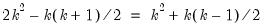
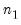
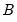
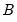

SVAR estimation uses estimates  obtained from the reduced form VAR, the short-run covariance relationships and any restrictions in Equation (44.32)
obtained from the reduced form VAR, the short-run covariance relationships and any restrictions in Equation (44.32), and long-run restrictions on the accumulated impulse responses (as described below), to identify and estimate the model. The challenge in SVAR estimation is that there are only

moments in

and more than

elements in

and

, or in

so that those matrices are not identified unless additional restrictions are provided.
From Equation (44.32) we may write the short-run A-B model as:
We may use the estimated moments  along with the
along with the  unique covariance equations in Equation (44.33)
unique covariance equations in Equation (44.33) to estimate the

elements in

and

. Satisfying the order condition requires an additional  restrictions for identification.
The F model employs estimates of the moments along with covariance relationships and restrictions from Equation (44.32) to estimate the

elements in

. Thus, long-run identifying restrictions are specified in terms of the elements of this

matrix, typically in the form of zero restrictions. The restriction

means that the (accumulated) response of the
i-th variable to the
j-th structural shock is zero in the long-run.
A pattern matrix is a  matrix whose non-missing values, i.e.
matrix whose non-missing values, i.e., non-NAs, specify constant restrictions on the corresponding matrix elements. All missing values,
i.e., NAs, place no restrictions on the corresponding matrix elements (such elements many still be restricted via text expressions). For example, suppose you want to restrict
A to be unit lower triangular and
B to be diagonal. With

the following pattern matrices could be employed:
|
|
Use mat as a pattern matrix for matrix X, e.g., “@a=mat1”, “@b = @mat2”.
|
@vec(X)=,  ,  , ...
|
Restricts all elements of matrix X similar using the specified pattern matrix (provided in list form). Element ordering matches the vectorization of the matrix, i.e., the elements of the first column, followed by the second column, followed by the third column, etc.
|
|
|
Restricts X to be a diagonal matrix, i.e., off-diagonal elements are zero. The diagonal elements are unrestricted.
|
|
|
Restricts X to be a diagonal matrix with elements on the diagonal restricted to be n.
|
|
|
Restricts X to be a lower triangular matrix, i.e., elements above the diagonal are zero.
|
|
|
Restricts X to be a unit lower triangular matrix, i.e., elements above the diagonal are zero and elements on the diagonal are one.
|
|
|
Restricts X to be an upper triangular matrix, i.e., elements below the diagonal are zero.
|
|
|
Restricts X to be a unit upper triangular matrix, i.e., elements below the diagonal are zero and elements on the diagonal are one.
|
|
|
|
|
|
|
Suppose we wish to recreate a recursive Cholesky orthogonalization (using the order of the variables in the VAR specification). This restriction is equivalent to requiring that the  matrix is lower triangular. In the SVAR dialog (“Restrictions”
matrix is lower triangular. In the SVAR dialog (“Restrictions”) there is for exactly this scenario, but we can also use a pattern matrix or text expression to restrict
S. For simplicity we’ll assume an underlying VAR named V1 with three endogenous variables (

). Each of the following sequences of commands produces the same set of S model restrictions and then estimates the model:
Once you have estimated a reduced form VAR, the SVAR specification and estimation dialog may be displayed by selecting You may use the dialog to specify a base collection of restrictions, customize restrictions on the four canonical matrices, and adjust options for the estimation procedure.
The tab allows you to specify your SVAR restrictions.
The drop-down menu provides a variety of pre-built restriction templates that can be applied to the SVAR model. Several of the presets can be used as is, while others require additional restrictions to meet the order condition.
To you click on the entry in the selection area, you may enter the specification of your restrictions using the syntax described above (
“Specifying SVAR Restrictions in EViews”).
Prior to estimation, you may first to click on the Optimization Control tab in the
SVAR Options dialog to show and modify the estimation settings:
The starting values are those for the unconstrained parameters after substituting out the constraints. Fixed sets all free parameters to the value specified in the edit field.
User Specified uses the values in the coefficient vector as specified in text form as starting values. For restrictions specified in pattern form, user specified starting values are taken from the first

elements of the default
C coefficient vector, where

is the number of free parameters. The
Draw from... options randomly draw the starting values for the free parameters from the specified distributions.
Options for controlling the optimization process are provided in the Optimization Control tab of the
SVAR Options dialog. You have the option to specify the maximum number of iterations, and the convergence criterion.
The checkbox instructs EViews to suppress “Near Singular Matrix” and other error messages during estimation. Consequently, if an error occurs, estimation results may be incomplete and inaccurate.
The tells EViews to summarize the ongoing optimization (iteration number, log-likelihood, parameter values) at the user-specified interval. Summary information is displayed in an unnamed text object.
Once optimization convergence is achieved, EViews displays the estimation output in the VAR window. The point estimates, standard errors, and z-statistics of the estimated free parameters are reported together with the maximized value of the log likelihood. The estimated standard errors are based on the inverse of the estimated information matrix (negative expected value of the Hessian) evaluated at the final parameter estimates.
If you switch the view of the VAR window, you can come back to the previous results (without reestimating) by selecting from the VAR window. In addition, some of the SVAR estimation results can be retrieved as data members of the VAR; see
“Var Data Members” for a list of available VAR data members.


.
will be used to form elements of
and
, or elements of S, or elements of F (mirroring the A-B, S, and F models), with the parameterization chosen to reflect the specified restrictions.
Once you provide identifying restrictions, you are ready to estimate the SVAR. Simply click on OK to estimate the model.Prior to estimation, you may first to click on the Optimization Control tab in the SVAR Options dialog to show and modify the estimation settings:The starting values are those for the unconstrained parameters after substituting out the constraints. Fixed sets all free parameters to the value specified in the edit field. User Specified uses the values in the coefficient vector as specified in text form as starting values. For restrictions specified in pattern form, user specified starting values are taken from the first , all of the , and are the structural coefficients, and the
, all of the , and are the structural coefficients, and the  are the orthonormal unobserved structural innovations with .
are the orthonormal unobserved structural innovations with . is invertible, we have:
is invertible, we have: .
. and
and  take the form of assumptions about the structure of contemporaneous feedback of variables in the SVAR and assumptions about the correlation structure of the errors, respectively.
take the form of assumptions about the structure of contemporaneous feedback of variables in the SVAR and assumptions about the correlation structure of the errors, respectively. element product matrix and not the elements in the individual
element product matrix and not the elements in the individual  and
and  . Thus, the order condition only requires an additional
. Thus, the order condition only requires an additional  restrictions for identification.
restrictions for identification. and
and  matrices as the latter are not identified from
matrices as the latter are not identified from  alone. For example, a given S model with
alone. For example, a given S model with  is equivalent to an A-B model with and , or an A-B model with and .
is equivalent to an A-B model with and , or an A-B model with and . take the form of restrictions on the composite factor loadings, but offer no insight into the decomposition into endogeneity
take the form of restrictions on the composite factor loadings, but offer no insight into the decomposition into endogeneity  and error loading components
and error loading components  .
. and
and  is sufficient to compute
is sufficient to compute  , but the converse is not true.
, but the converse is not true.  , ,
, ,  , and
, and  . In addition to commonly employed restrictions on single elements of the structural matrices, you may specify restrictions across elements of a given matrix, and you may even specify restrictions span
. In addition to commonly employed restrictions on single elements of the structural matrices, you may specify restrictions across elements of a given matrix, and you may even specify restrictions span  ,
,  ,
,  , and
, and  .
. can be substituted with any of the canonical matrices
can be substituted with any of the canonical matrices  ,
,  ,
,  , and
, and  . The canonical names should not be preceded by “@” in this context since there is no potential workfile object ambiguity in the function argument(s).
. The canonical names should not be preceded by “@” in this context since there is no potential workfile object ambiguity in the function argument(s). captures only the standard deviations of the structural innovations so that the off-diagonal elements of
captures only the standard deviations of the structural innovations so that the off-diagonal elements of  are set to zero. For
are set to zero. For  , these six restrictions fall short of the twelve restrictions necessary to satisfy the order condition, so (at least) six additional restrictions are required. To satisfy the order condition, we will restrict matrix
, these six restrictions fall short of the twelve restrictions necessary to satisfy the order condition, so (at least) six additional restrictions are required. To satisfy the order condition, we will restrict matrix  to have ones along the diagonal and require , , and .
to have ones along the diagonal and require , , and . , we must use text expressions to specify the linear restrictions
, we must use text expressions to specify the linear restrictions specified in terms of elements of
specified in terms of elements of  and
and  , or
, or  , or
, or  , which in turn depend on
, which in turn depend on  . We estimate
. We estimate  via maximum likelihood using the concentrated log-likelihood function:
via maximum likelihood using the concentrated log-likelihood function: and
and  . If the restrictions are in terms of
. If the restrictions are in terms of  and
and  , then the restrictions on
, then the restrictions on  would be converted to restrictions on elements of
would be converted to restrictions on elements of  .
. or
or  there is an additional complication, since restrictions on
there is an additional complication, since restrictions on  or
or  cannot, in general, be converted to restrictions on
cannot, in general, be converted to restrictions on  and
and  . In this setting, restrictions on
. In this setting, restrictions on  and
and  are enforced numerically through inclusion of a penalty term in the log-likelihood function.
are enforced numerically through inclusion of a penalty term in the log-likelihood function.  be kept to a minimum.
be kept to a minimum. are positive, with a further preference for the diagonal elements of matrix
are positive, with a further preference for the diagonal elements of matrix  to be positive in model. While it is not always possible to make the diagonal elements positive, this normalization procedure attempts to give all structural impulses positive signs (as well as the Cholesky factorization). The EViews default behavior applies this normalization rule whenever applicable. If you do not want to normalize the signs, deselect the
to be positive in model. While it is not always possible to make the diagonal elements positive, this normalization procedure attempts to give all structural impulses positive signs (as well as the Cholesky factorization). The EViews default behavior applies this normalization rule whenever applicable. If you do not want to normalize the signs, deselect the  is the number of identifying restrictions.
is the number of identifying restrictions.